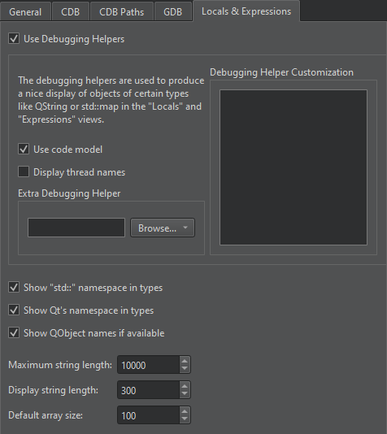

Using Debugging Helpers
To show complex structures, such as QObjects or associative containers, in a clear and concise manner, Qt Creator uses Python scripts that are called debugging helpers.
Qt Creator ships with debugging helpers for more than 200 of the most popular Qt classes, standard C++ containers, and smart pointers, covering the usual needs of a C++ application developer out-of-the-box.
Extending Debugging Helpers
Qt Creator uses Python scripts to translate raw memory contents and type information data from native debugger backends (GDB, LLDB, and CDB are currently supported) into the form presented to the user in the Locals and Expressions views.
Unlike GDB's pretty printers and LLDB's data formatters, Qt Creator's debugging helpers are independent of the native debugging backend. That is, the same code can be used with GDB on Linux, LLDB on macOS, and CDB on Windows, or any other platform on which at least one of the three supported backends is available.
To use the default GDB pretty printers installed in your system or linked to the libraries your application uses, select Preferences > Debugger > GDB > Load system GDB pretty printers. For more information, see Specifying GDB Settings.

Customizing Built-In Debugging Helpers
You can have commands executed after built-in debugging helpers have been loaded and fully initialized. To load additional debugging helpers or modify existing ones, select Preferences > Debugger > Locals & Expressions, and enter the commands in the Debugging Helper Customization field.

If you receive error messages about receiving signals when using GDB, you can specify GDB commands for handling the signals. For example, you can tell GDB to ignore the SIGSTOP signal if you receive the following error message: The inferior stopped because it received a signal from the operating system. Signal name: SIGSTOP.
To stop GDB from handling the SIGSTOP signal, add the following commands to the Debugging Helper Customization field:
handle SIGSTOP nopass handle SIGSTOP nostop
To display a message box as soon as your application receives a signal during debugging, select Preferences > Debugger > GDB > Show a message box when receiving a signal.
Adding Custom Debugging Helpers
To add debugging helpers for your own types, no compilation is required, just adding a few lines of Python. The scripts can address multiple versions of Qt, or of your own library, at the same time.
To add debugging helpers for custom types, add debugging helper implementations to the startup file of the native debuggers (for example, ~/.gdbinit or ~/.lldbinit) or specify them directly in the Additional Startup Commands in Preferences > Debugger > GDB.
To get started with implementing debugging helpers for your own data types, you can put their implementation into the file share/qtcreator/debugger/personaltypes.py in your Qt installation or stand-alone Qt Creator installation. On macOS, the file is bundled into the Qt Creator application package, where it is located in the Contents/resources/debugger folder.
The personaltypes.py file has one example implementation:
# def qdump__MapNode(d, value):
# d.putValue("This is the value column contents")
# d.putExpandable()
# if d.isExpanded():
# with Children(d):
# # Compact simple case.
# d.putSubItem("key", value["key"])
# # Same effect, with more customization possibilities.
# with SubItem(d, "data")
# d.putItem("data", value["data"])
To add debugging helpers:
- Open the
share/qtcreator/debugger/personaltypes.pyfile for editing. For example, if your Qt installation is located in theQt5directory on Windows, look inC:\Qt5\Tools\QtCreator\share\qtcreator\debugger. On macOS, look inQt5/Qt Creator.app/Contents/resources/debugger. - Add your dumper implementation to the end of the
personaltypes.pyfile. For more information about implementing debugging helpers, see the following sections. - To prevent
personaltypes.pyfrom being overwritten when you update your Qt Creator installation (when updating your Qt installation, for example), copy it to a safe location outside the Qt Creator installation in your file system and specify the location in Preferences > Debugger > Locals & Expressions > Extra Debugging Helper.
The custom debugging helpers will be automatically picked up from personaltypes.py when you start a debugging session in Qt Creator or select Reload Debugging Helpers from the context menu of the Debugger Log view.
Debugging Helper Overview
The implementation of a debugging helper typically consists of a single Python function, which needs to be named qdump__NS__Foo, where NS::Foo is the class or class template to be examined. Note that the :: scope resolution operator is replaced by double underscores: __. Nested namespaces are possible. Template arguments are not used for the construction of the function name.
Examples:
- The name for the function implementing a debugging helper for the type
namespace Project { template<typename T> struct Foo {... } }isqdump__Project__Foo. - The name for the function implementing a debugging helper for the type
std::__1::vector<T>::iteratorisqdump__std____1__vector__iterator.
Qt Creator's debugger plugin calls this function whenever you want to display an object of this type. The function is passed the following parameters:
dof typeDumper, an object that has the current settings and providing facilities to build up an object representing a part of the Locals and Expressions views.valueof typeValue, wrapping either a gdb.Value or an lldb.SBValue.
The qdump__* function has to feed the Dumper object with certain information that is used to build up the object and its children's display in the Locals and Expressions views.
Example:
def qdump__QFiniteStack(d, value): alloc = value["_alloc"].integer() size = value["_size"].integer() d.putItemCount(size) if d.isExpanded(): d.putArrayData(value["_array"], size, value.type[0])
Note: To create dumper functions usable with both LLDB and GDB backends, avoid direct access to the gdb.* and lldb.* namespaces and use the functions of the Dumper class instead.
To get to the base instance of the object in the debugging helper, use the value.base() function or the following example code:
def qdump__A(d, value): t = value.members(True)[0].type dptr, base_v = value.split('p{%s}' % t.name) d.putItem(base_v)
Debugging helpers can be set up to be called whenever a type name matches a regular expression. To do so, the debugging helper's function name must begin with qdump__ (with two underscore characters). In addition, the function needs to have a third parameter called regex with a default value that specifies the regular expression that the type name should match.
For example, the Nim 0.12 compiler assigns artificial names, such as TY1 and TY2, to all generic sequences it compiles. To visualize these in Qt Creator, the following debugging helper may be used:
def qdump__NimGenericSequence__(d, value, regex = "^TY.*$"): size = value["Sup"]["len"] base = value["data"].dereference() typeobj = base.dereference().type d.putArrayData(base, size, typeobj)
Debugging Helper Implementation
A debugging helper creates a description of the displayed data item in a format that is similar to GDB/MI and JSON.
For each line in the Locals and Expressions views, a string like the following needs to be created and channeled to the debugger plugin.
{ iname='some internal name', # optional
address='object address in memory', # optional
name='contents of the name column', # optional
value='contents of the value column',
type='contents of the type column',
numchild='number of children', # zero/nonzero is sufficient
children=[ # only needed if item is expanded in view
{iname='internal name of first child',
},
{iname='internal name of second child',
},
]}
The value of the iname field is the internal name of the object, which consists of a dot-separated list of identifiers, corresponding to the position of the object's representation in the view. If it is not present, it is generated by concatenating the parent object's iname, a dot, and a sequential number.
The value of the name field is displayed in the Name column of the view. If it is not specified, a simple number in brackets is used instead.
As the format is not guaranteed to be stable, it is strongly recommended not to generate the wire format directly, but to use the abstraction layer of the Python Dumper classes, specifically the Dumper class itself, and the Dumper:Value and Dumper:Type abstractions. These offer a complete framework to take care of the iname and addr fields, to handle children of simple types, references, pointers, enums, and known and unknown structs, as well as some convenience functions to handle common situations.
When using CDB as debugger backend, you can enable the Python dumper by selecting Preferences > Debugger > CDB > Use Python dumper.

The following sections describe some of the widely-used Dumper classes and members specified in qtcreator\share\qtcreator\debugger\dumper.py.
Dumper Class
The Dumper class has generic bookkeeping, low-level, and convenience functions:
putItem(self, value)- The master function that handles basic types, references, pointers, and enums directly, iterates over base classes and class members of compound types, and callsqdump__*functions when appropriate.putIntItem(self, name, value)- Equivalent to:with SubItem(self, name): self.putValue(value) self.putType("int")
putBoolItem(self, name, value)- Equivalent to:with SubItem(self, name): self.putValue(value) self.putType("bool")
putCallItem(self, name, rettype, value, func, *args)- Uses the native debugger backend to place the function callfuncreturningrettypeon the value specified by value and to output the resulting item.Native calls are extremely powerful and can leverage existing debugging or logging facilities in the debugged process, for example. However, they should only be used in a controlled environment, and only if there is no other way to access the data, for the following reasons:
- Direct execution of code is dangerous. It runs native code with the privileges of the debugged process, with the potential to not only corrupt the debugged process, but also to access the disk and network.
- Calls cannot be executed when inspecting a core file.
- Calls are expensive to set up and execute in the debugger.
putArrayData(self, address, itemCount, type)- Creates the number of children specified byitemCountof the typetypeof an array-like object located ataddress.putSubItem(self, component, value)- Equivalent to:with SubItem(self, component): self.putItem(value)
Exceptions raised by nested function calls are caught and all output produced by
putItemis replaced by the output of:except RuntimeError: d.put('value="<invalid>",type="<unknown>",numchild="0",')put(self, value)- A low-level function to directly append to the output string. That is also the fastest way to append output.putField(self, name, value)- Appends aname='value'field.childRange(self)- Returns the range of children specified in the currentChildrenscope.putItemCount(self, count)- Appends the fieldvalue='<%d items>'to the output.putName(self, name)- Appends thename=''field.putType(self, type, priority=0)- Appends the fieldtype='', unless the type coincides with the parent's default child type orputTypewas already called for the current item with a higher value ofpriority.putBetterType(self, type)- Overrides the last recordedtype.putExpandable(self)- Announces the existence of child items for the current value. The default are no children.putNumChild(self, numchild)- Announces the existence (numchild> 0) or non-existence of child items for the current value.putValue(self, value, encoding = None)- Appends the filevalue='', optionally followed by the fieldvalueencoding=''. Thevalueneeds to be convertible to a string entirely consisting of alphanumerical values. Theencodingparameter can be used to specify the encoding in case the real value had to be encoded in some way to meet the alphanumerical-only requirement. The parameterencodingis either a string of the formcodec:itemsize:quotewherecodecis any oflatin1,utf8,utf16,ucs4,int, orfloat.itemsizegives the size of the basic component of the object if it is not implied bycodecandquotespecifies whether or not the value should be surrounded by quotes in the display.Example:
# Safe transport of quirky data. Put quotes around the result. d.putValue(d.hexencode("ABC\"DEF"), "utf8:1:1")
putStringValue(self, value)- Encodes a QString and callsputValuewith the correctencodingsetting.putByteArrayValue(self, value)- Encodes a QByteArray and callsputValuewith the correctencodingsetting.isExpanded(self)- Checks whether the current item is expanded in the view.createType(self, pattern, size = None)- Creates aDumper.Typeobject. The exact operation depends onpattern.- If
patternmatches the name of a well-known type, aDumper.Typeobject describing this type is returned. - If
patternis the name of a type known to the native backend, the returned type describes the native type. - Otherwise,
patternis used to construct a type description by interpreting a sequence of items describing the field of a structure as follows. Field descriptions consist of one or more characters as follows:q- Signed 8-byte integral valueQ- Unsigned 8-byte integral valuei- Signed 4-byte integral valueI- Unsigned 4-byte integral valueh- Signed 2-byte integral valueH- Unsigned 2-byte integral valueb- Signed 1-byte integral valueB- Unsigned 1-byte integral valued- 8-byte IEEE 754 floating point valuef- 4-byte IEEE 754 floating point valuep- A pointer, that is, an unsigned integral value of suitable size according to the target architecture@- Suitable padding. The size is determined by the preceding and following field and the target architecture<n>s- A blob of <n> bytes, with implied alignment of 1<typename>- A blob of suitable size and suitable alignment determined by aDumper.Typewith the nametypename
- If
Dumper.Type Class
The Dumper.Type class describes the type of a piece of data, typically a C++ class or struct, a pointer to a struct, or a primitive type, such as an integral or floating point type.
Type objects, that is, instances of the Dumper.Type class, can be created by native debugger backends, usually by evaluating Debug Information built into or shipped alongside the debugged binary, or created on-the-fly by the debugging helper.
Qt Creator offers type information on-the-fly for most Qt classes, obliterating the need to use Debug builds of Qt for the purpose of object introspection.
The Dumper.Type class has the following widely-used member functions:
name- The name of this type as a string, orNoneif the type is anonymous.size(self)- Returns the size of an object of this type in bytes.bitsize(self)- Returns the size of an object of this type in bits.alignment(self)- Returns the required alignment for objects of this type in bytes.deference(self)- Returns the dereferences type for pointer type,Noneotherwise.pointer(self)- Returns a pointer type that can be dereferenced to this type.target(self)- A convenience function that returns the item type for array types and the dereferenced type for pointers and references.stripTypedefs(self)- Returns the underlying type if this type is an alias.templateArgument(self, position, numeric = False)- Returns the template parameter located atpositionif this is a templated type. IfnumericisTrue, returns the parameter as an integral value.fields(self)- Returns a list ofDumper:Fieldsdescribing the base classes and data members of this type.
Dumper.Field Class
The Dumper.Field class describes a base class or a data member of a type object:
isBaseClass- Distinguishes between base classes and data members.fieldType(self)- Returns the type of this base class or data member.parentType(self)- Returns the owning type.bitsize(self)- Returns the size of this field in bits.bitpos(self)- Returns the offset of this field in the owning type in bits.
Dumper.Value Class
The Dumper.Value class describes a piece of data, such as instances of C++ classes or primitive data types. It can also be used to describe artificial items that have no direct representation in memory, such as file contents, non-contiguous objects, or collections.
A Dumper.Value has always an associated Dumper.Type. The two main representations of the value's actual data are:
- Python object following the Python buffer protocol, such as a Python
memoryview, or abytesobject. Thesize()should match the size of this value's type. - An integral value representing a pointer to the begin of the object in the current address space. The size of the object is given by its type's
size().
Knowledge of the internal representation of a Dumper.Value is typically not required when creating a debugger helper for it.
The member function and properties of the Dumper.Value class are the following:
integer(self)- Returns an interpretation of this value as a signed integral value of a suitable size.pointer(self)- Returns an interpretation of this value as a pointer in the current address space.members(self, includeBases)- Returns a list ofDumper.Valueobjects representing the base objects and data members of this value.dereference(self)- For values describing pointers, returns the dereferenced value, andNoneotherwise.cast(self, type)- Returns a value that has the same data as this value, but the typetype.address(self)- Returns the address of this value if it consists of a contiguous region in the current address space, andNoneotherwise.data(self)- Returns the data of this value as a Pythonbytesobject.split(self, pattern)- Returns a list of values created according topatternfrom this value's data. Acceptable patterns are the same as forDumper.createType.dynamicTypeName(self)- Tries to retrieve the name of the dynamic type of this value if this is a base class object. ReturnsNoneif that is not possible.
Children and SubItem Class
The attempt to create child items might lead to errors if data is uninitialized or corrupted. To gracefully recover in such situations, use Children and SubItem Context Managers to create the nested items.
The Children constructor __init__(self, dumper, numChild = 1, childType = None, childNumChild = None, maxNumChild = None, addrBase = None, addrStep = None) uses one mandatory argument and several optional arguments. The mandatory argument refers to the current Dumper object. The optional arguments can be used to specify the number numChild of children, with type childType_ and childNumChild_ grandchildren each. If maxNumChild is specified, only that many children are displayed. This should be used when dumping container contents that might take overly long otherwise. The parameters addrBase and addrStep can be used to reduce the amount of data produced by the child dumpers. Address printing for the nth child item will be suppressed if its address equals with addrBase + n * addrStep.
Example:
if d.isExpanded(): with Children(d): with SubItem(d): d.putName("key") d.putItem(key) with SubItem(d): d.putName("value") d.putItem(value)
Note that this can be written more conveniently as:
d.putNumChild(2) if d.isExpanded(): with Children(d): d.putSubItem("key", key) d.putSubItem("value", value)